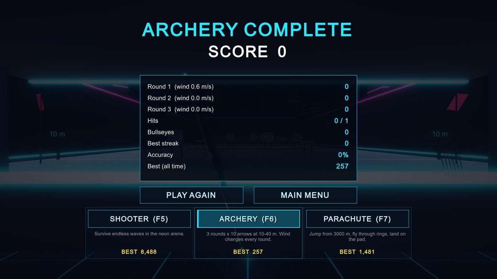
The user interface was designed around four goals: (1) a single consistent neon identity (dark translucent panels, cyan borders, white bold text, magenta and yellow accents) across all modes; (2) immediate readability during fast action, so that health, ammunition, score and objectives are always at the screen edges and never over the crosshair; (3) discoverability, so that every screen shows the keys it accepts; and (4) device independence, so that the same menus work with a mouse, a gamepad and a VR laser pointer.
The desktop interface is drawn with Unity's immediate-mode GUI (IMGUI) by one partial class, HUD, split over HUD.cs, HUDMenus.cs, HUDGameOver.cs, HUDShop.cs and HUDModes.cs. All layout is written in a 1920×1080 reference space and scaled by S = screen height / 1080, so the layout is identical at every resolution and in each half of split-screen co-op. The Rat Shooter scene has its own cartoon-styled HUD (RatHUD) with the same structure. In VR the same menu content is shown on a world-space panel operated with a controller laser pointer (Section 8.11).
The main menu ([[f-menu-now]]) is the hub of the application. The left column lists the four game modes with each mode's all-time best score, followed by the tutorial, leaderboard and statistics, settings, help and quit. The right panel is the mission set-up for the shooter (solo or split-screen co-op, difficulty, arena and call-sign). Behind the menu the camera slowly orbits the live arena, so the menu already shows the game world.
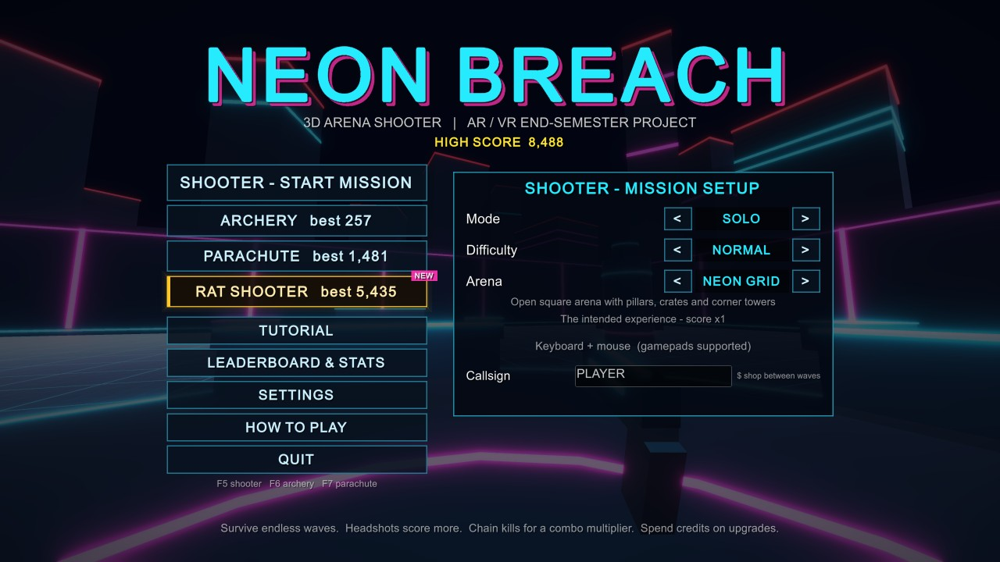
| Entry | Action |
|---|---|
| SHOOTER – START MISSION | Starts the wave shooter with the set-up chosen on the right (or the interactive tutorial on the very first run) |
| ARCHERY · best n | Builds the archery range and starts round 1 of 3 (10 arrows each) |
| PARACHUTE · best n | Builds the island and places the player in the aircraft door at 3,000 m |
| RAT SHOOTER · best n | Fades out and loads the separate RatShooter.unity scene through SceneFader |
| TUTORIAL | Eight guided steps: look, move, sprint and jump, shoot targets, reload, aim down sights, grenade, power-ups |
| LEADERBOARD & STATS | Local leaderboard and lifetime statistics, with a reset option protected by confirmation |
| SETTINGS | Six tabs: Gameplay, Graphics, Audio, Controls (key rebinding), VR Comfort and Language |
| HOW TO PLAY / QUIT | Controls and rules of every mode / exits the application |
From inside any mode, the pause menu's SWITCH MODE panel and the results screen show the three in-scene modes as mode cards (name and hot-key, a short description and the best score), and the F5, F6 and F7 keys switch directly between Shooter, Archery and Parachute.
Before the polish pass a neon button only changed colour on hover. All buttons now share the hover language that the Rat Shooter button already used: a soft pulsing outer glow (two rings whose alpha follows a 5 rad/s sine), a white left accent bar and a white label; a selected button keeps a cyan accent bar. Each mode card now sits on its own panel that brightens and pulses its border while the pointer is over it, so the card behaves as one large target rather than a small button with loose text under it. Because the change is inside the shared Button method, every menu (main, pause, settings, results, shop) received it at once without layout changes ([[l-button]]).

[[f-nav]] shows every path between screens. Shooter, Archery and Parachute live in the main scene and are switched by ModeManager without reloading; the Rat Shooter is a separate scene, loaded asynchronously behind a fade by SceneFader, and its own menu returns to the main scene the same way.
flowchart LR M["Main menu"] -->|START MISSION| SH["Shooter waves"] M -->|ARCHERY| AR["Archery range"] M -->|PARACHUTE| PA["Skydive"] M -->|RAT SHOOTER
SceneFader| RS["Rat Shooter scene"] M --> TU["Tutorial"] --> SH SH <-->|Esc| P["Pause menu"] AR <-->|Esc| P PA <-->|Esc| P P -->|SWITCH MODE / F5-F7| SH & AR & PA P -->|RESTART| SH P -->|MAIN MENU| M SH -->|player dies| GO["Game over:
summary, analytics, leaderboard"] AR -->|3 rounds done| RE["Results + mode cards"] PA -->|landed| RE GO --> M RE -->|PLAY AGAIN| AR RE -->|MAIN MENU| M RS -->|Main menu button
SceneFader| M
Consistent transitions (polish pass). Previously only the scene change to the Rat Shooter faded; switching between in-scene modes cut instantly. A short fade from black now plays whenever a shooter mission, the tutorial, an archery or parachute run starts and whenever the player returns to the main menu (0.5–0.6 s, smoothstep easing), and the archery and parachute results screen fades in over 0.5 s instead of appearing at once. The fade is drawn last in OnGUI, over every other element, and is driven by unscaled time, so it also works while the game is paused or in slow motion. The fade clock starts on the first frame that is actually drawn after the request, not when it is requested: the first test showed that building the Parachute island takes longer than the fade itself, so without this the fade was used up before the first frame appeared ([[l-fade]], [[f-fade]], [[f-resfade]]). To let a whole screen fade, the Fill helper now multiplies its colour by the alpha of GUI.color; this is invisible everywhere else because that alpha is normally 1.

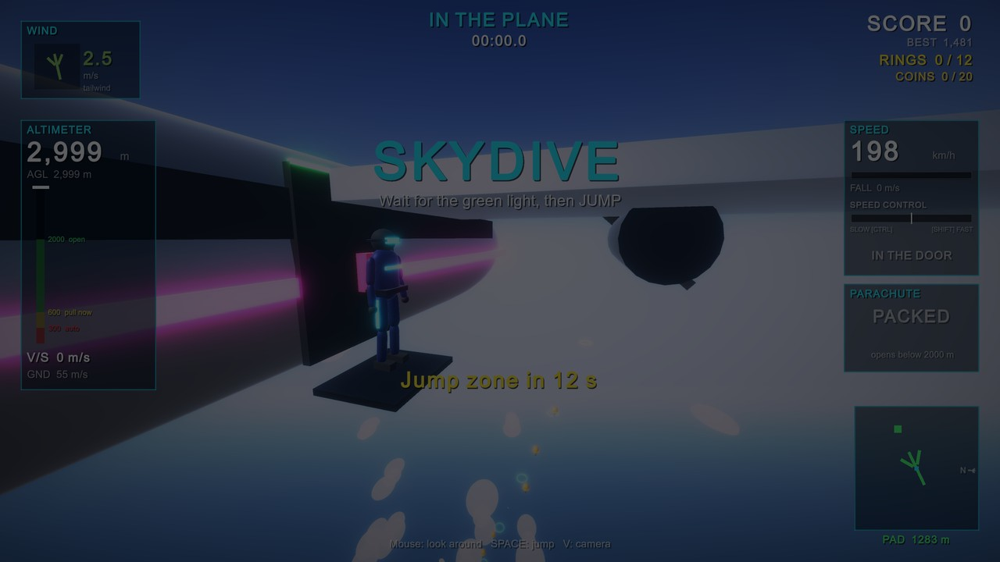


All four HUDs follow one grid: mode status top-centre, score and best score top-right, situational information top-left, player resources bottom-left or bottom-right, and a one-line control hint at the bottom centre. [[t-hud]] lists the elements; the figures below show each HUD in play.
| Mode | HUD elements and feedback |
|---|---|
| Shooter | Wave number and hostiles left; score, best score and combo multiplier; radar; health, shield, medkits and dash bars; weapon name, magazine/reserve ammunition, grenades and weapon slots 1–3; crosshair; hit markers (white body, red head, X on kill); floating damage numbers; red damage-direction indicators; low-ammo and RELOAD prompts with a reload progress bar; wave banners and toasts |
| Archery | Round n/3 and one pip per arrow left; score and best; wind panel (speed, direction arrow and tail/head/crosswind label); draw meter (DRAW n% → FULL DRAW); breath bar when holding breath; hit text (MISS, +points, BULLSEYE! with streak multiplier); new trajectory guide; round summary with per-arrow scores |
| Parachute | Phase (IN THE PLANE, FREE FALL, DEPLOYING, CANOPY, LANDED) and timer; altimeter with an altitude tape that marks the deploy window, the “pull now” warning band and the auto-deploy line; vertical speed and ground speed; speed-control gauge; parachute state; rings and coins collected; landing-pad radar with distance; large OPEN PARACHUTE prompt that appears only inside the deploy window and blinks red below the warning altitude |
| Rat Shooter | Level, time left and mice remaining; score with combo; ammunition with a reload animation; headshot and combo call-outs; countdown; level-clear summary with time, ammo and accuracy bonuses and 1–3 stars; best score with a NEW! tag |


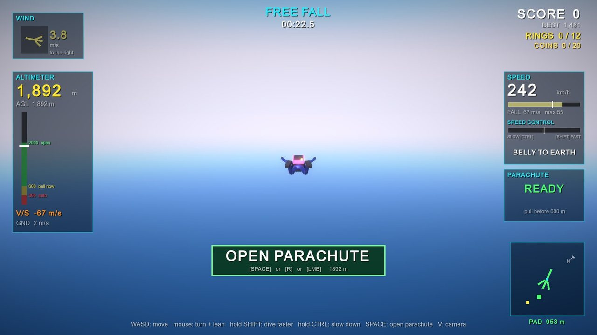
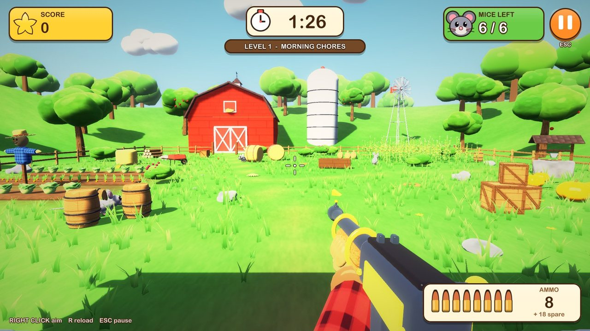
The archery interface had no way to show how draw strength, gravity and wind shape a shot. The new guide is a dotted cyan arc that appears once the bow is drawn past 12 %, fades in with the draw and brightens at full draw. It is computed every frame by Arrow.Predict, which runs exactly the same integration as a real arrow (gravity, quadratic drag, the current round's wind and swept raycasts against the range), so the arc ends where the arrow would actually land (Section 9.2). Each dash is 40 ms of flight. On the desktop the arrow is launched from the eye, which would make the true path an end-on dot under the crosshair, so the guide starts at the tip of the nocked arrow and blends onto the predicted path with a (1−t)2 weight; the far end, including the predicted impact point, is unchanged. The far end is drawn at reduced opacity, so reading the exact impact remains part of the skill.
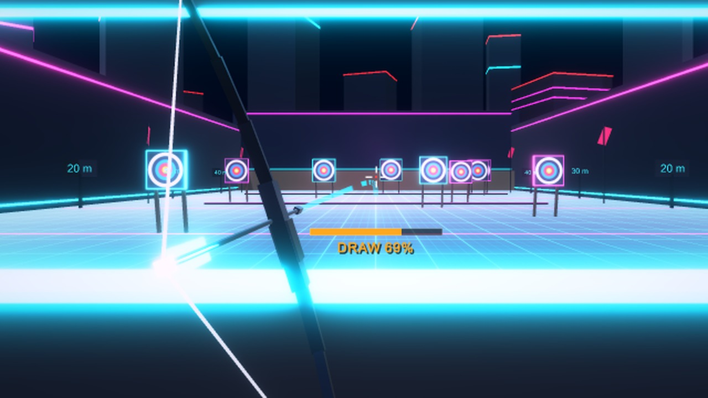

The pause menu (Esc, or the VR menu button) freezes time and offers Resume, How to Play, Settings, Restart (or Skip Tutorial), Switch Mode, Main Menu and Quit. The shooter's game-over screen animates in over about a second and has three tabs: a summary (score, wave, kills, accuracy, headshots, new-high-score banner), analytics (a damage heat-map of the arena and a kills-per-wave chart) and the local leaderboard. The archery and parachute results screens show the score, a NEW HIGH SCORE! banner when the best is beaten, a per-round or per-phase breakdown, PLAY AGAIN and MAIN MENU, and the mode cards for a quick switch.
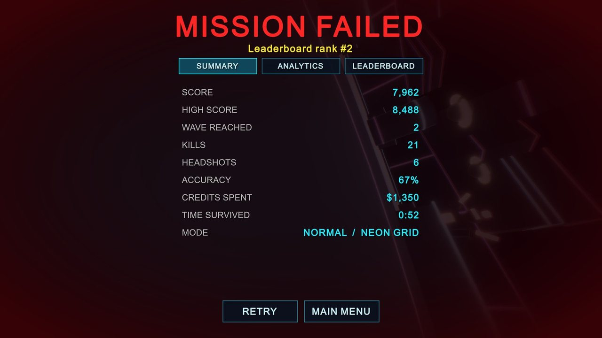
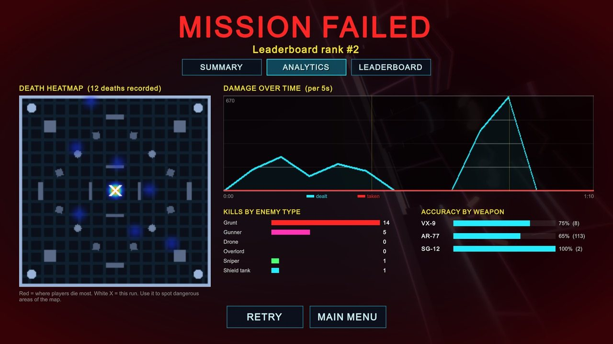
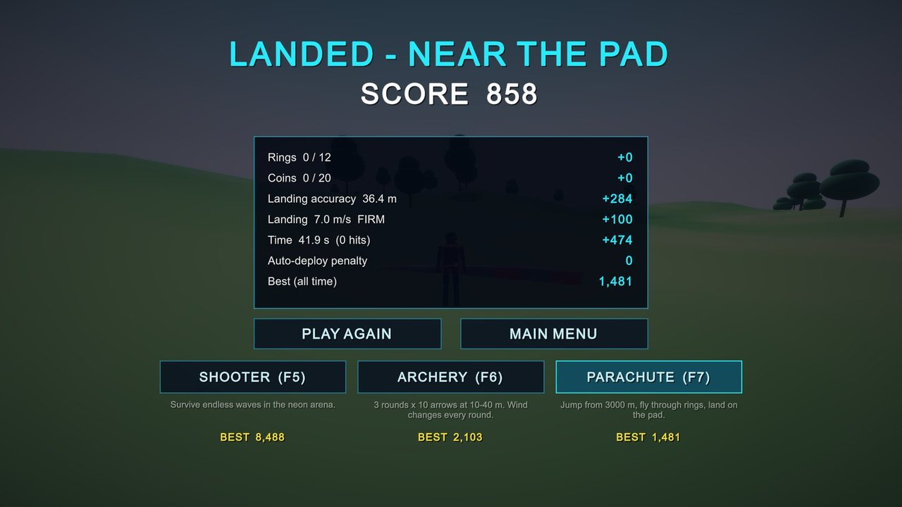
First-time players are taken through an eight-step interactive tutorial; each step states a goal (look around, move, sprint and jump, shoot the targets, reload, aim down sights, throw a grenade, collect a power-up) and advances only when the player has done it. F1 toggles a help overlay with the controls of the current mode, F3 an FPS counter and F4 a performance overlay. The settings screen has six tabs: gameplay (mouse sensitivity, field of view, screen shake, invert-Y, tutorial replay), graphics (post-processing, VSync, bloom intensity, FPS counter, full screen), audio (master and music volume, HRTF spatial audio), controls (rebinding of all 15 actions), VR comfort (vignette on/off and strength, snap or smooth turning with angle or speed, seated mode, hand tracking, haptics, mixed reality) and language (English, Spanish, French and German through the Loc table).

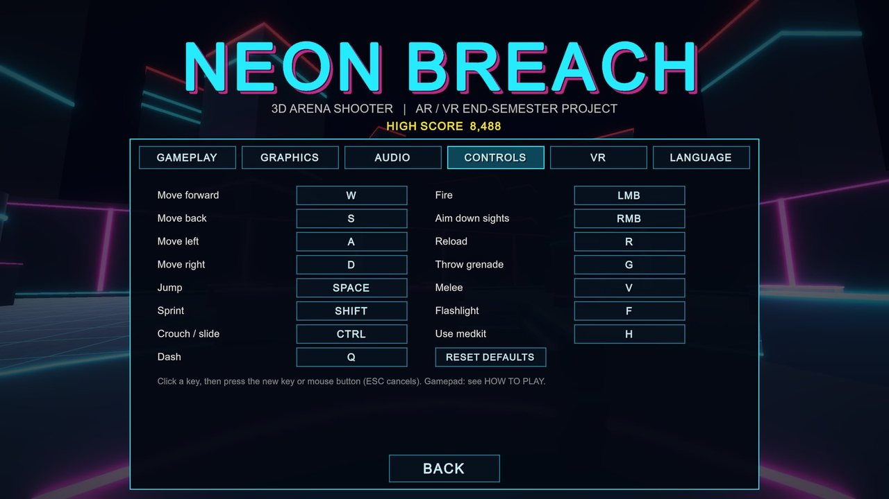

Every device writes into the same PlayerInputState (Chapter 4), so the controls in [[t-controls]] drive identical gameplay code. Keyboard bindings are the defaults and can be changed in the settings.
| Action | Keyboard + mouse | Gamepad | VR controllers (OpenXR) |
|---|---|---|---|
| Move / look | W A S D / mouse | Left stick / right stick | Left stick / head; right stick snap or smooth turn |
| Fire / draw bow | Left mouse button | Right trigger | Right trigger |
| Aim, zoom | Right mouse button | Left trigger | Left trigger (zoom) |
| Reload | R | X | Right grip |
| Jump / sprint | Space / Left Shift | A / left stick click | A / left stick click |
| Crouch, slide / dash | Left Ctrl / Q | B / LB | Right stick back / right stick click |
| Grenade / melee | G / V | RB / R3 | Left trigger / left grip |
| Weapons / medkit / light | 1, 2, 3 / H / F | Y (cycle) | B (cycle) / Y / X |
| Pause | Esc | Start | Left menu button |
| Switch mode | F5 Shooter, F6 Archery, F7 Parachute | Pause → Switch mode | VR menu |
| Archery breath | Hold Shift while zoomed | Left stick click | Left stick click |
| Parachute | Configurable inputs in SkydiveSettings; by default Space jumps from the aircraft and opens the parachute, W A S D track and steer, the mouse turns and leans, and the HUD hint line always shows the keys bound for the current phase. | ||
| Rat Shooter | Mouse aim, left button fire, right button aim down sights, R reload, Esc or P pause. | ||
In VR, IMGUI cannot be seen inside the headset, so VRMenu draws the same menu as a world-space panel in front of the player, and VRMenuDriver casts a laser from the right controller (ray-casting selection [28]); the trigger clicks the highlighted button. During play a wrist display on the left hand shows health, ammunition, wave and score (mini-game modes put their own read-out there), so no head-locked HUD is needed. The VR menu was exercised end to end with the OpenXR Mock Runtime (Chapter 5) ([[f-vr-menu]]).

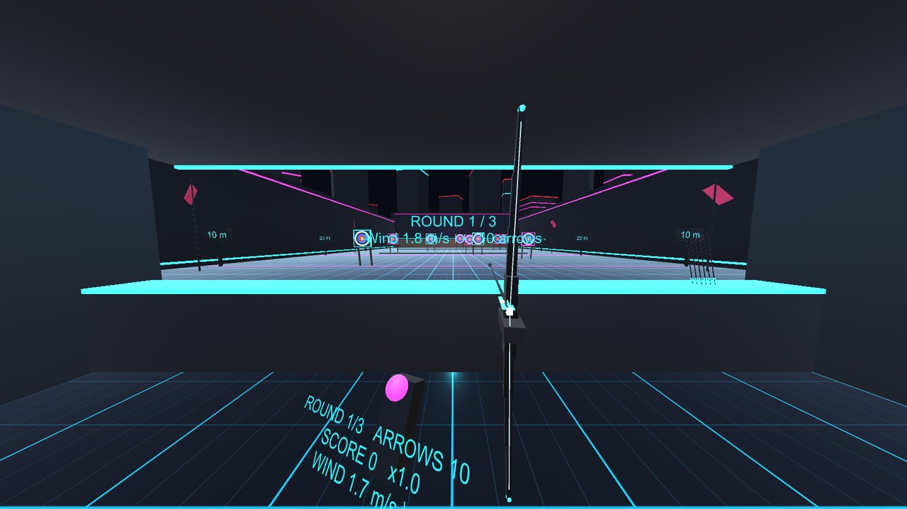
The interface was reviewed against Nielsen's ten usability heuristics [30]. [[t-heuristics]] lists how the project addresses each one; the review was done by the two authors, not by external users, so it is an expert review rather than a user study (Chapter 14).
| Heuristic | How NEON BREACH addresses it |
|---|---|
| Visibility of system status | Persistent HUD values; draw meter, reload bar, altitude tape and deploy window; trajectory guide while drawing |
| Match with the real world | Metres, m/s and km/h; physically based arrows and free fall; familiar shooter conventions |
| User control and freedom | Pause, restart, switch mode and main menu from every mode; skip tutorial; F5–F7 hot-keys |
| Consistency and standards | One button style, one panel style, one fade transition and one HUD grid in every mode |
| Error prevention | Confirmation before resetting statistics; deploy prompt and auto-deploy safety in Parachute |
| Recognition rather than recall | Bound keys printed in the hint line of every phase; mode cards show hot-keys |
| Flexibility and efficiency | Key rebinding, hot-keys, four input methods, quick restart |
| Aesthetic and minimalist design | Information at the screen edges; the centre is kept for the crosshair and the world |
| Help users recover from errors | Missed shots show MISS; the Parachute auto-deploys at the safety altitude; Rat Shooter retry level |
| Help and documentation | Interactive tutorial, How to Play screen and the F1 help overlay |